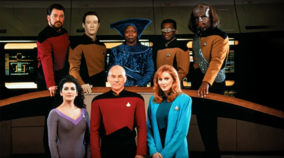

Fatma Kurtgözü
Hakkımda
Merhaba. Ben Fatma. Yurtdışında yaşıyorum. Kitap okumayı, ailem ile yürüyüşler yapmayı, balık tutmayı ve seyahat etmeyi çok seviyorum. Web geliştirme ile ilgileniyorum. Kodluyoruz'un bu eğitim serisi sayesinde harika şeyler öğrendim ve öğrenmeye devam ediyorum.
İlgi Alanlarım
- Film
- Dizi
- Kitap
- Sefiller
- Suç ve Ceza
- İki Şehrin Hikayesi
Sevdiğim Diziler
Star Trek: The Next Generation

Uzay Yolu: Yeni Nesil (Star Trek: The Next Generation) Gene Roddenberry tarafından yaratılmış olan kurgusal Uzay Yolu evreninde geçen bir bilimkurgu dizisidir. Türkiye'de 1990-1997 yılları arasında Star Tv'de yayınlanmıştır.